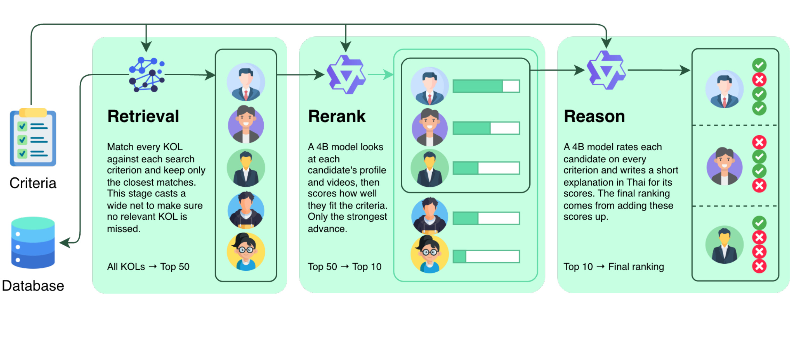
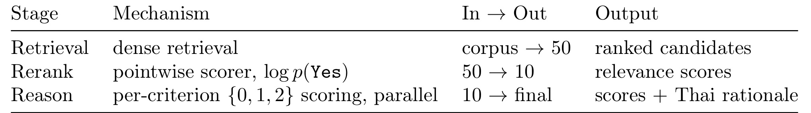
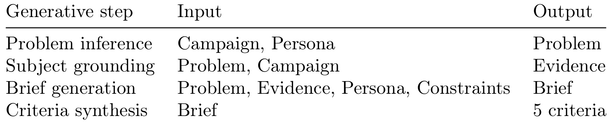
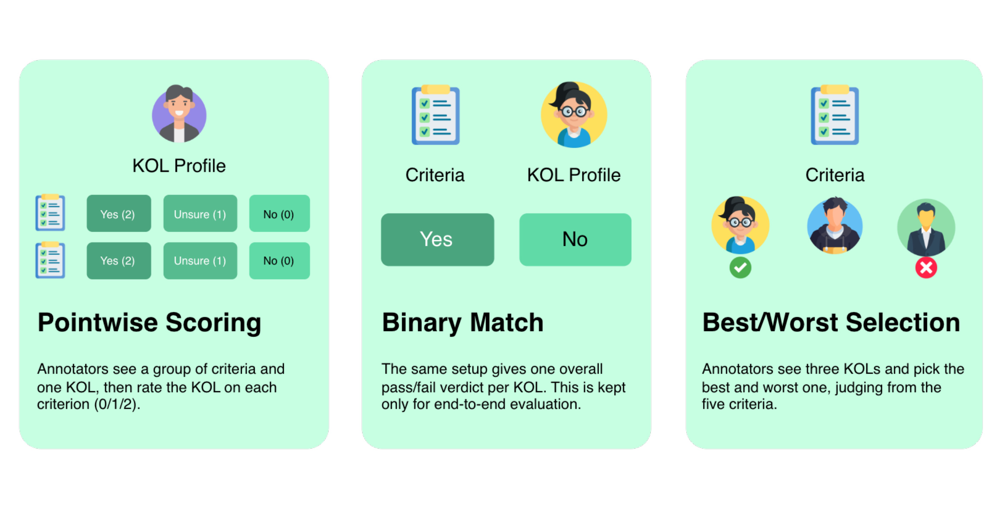
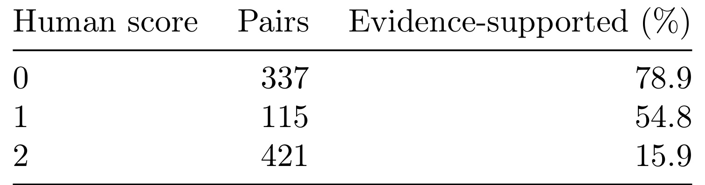
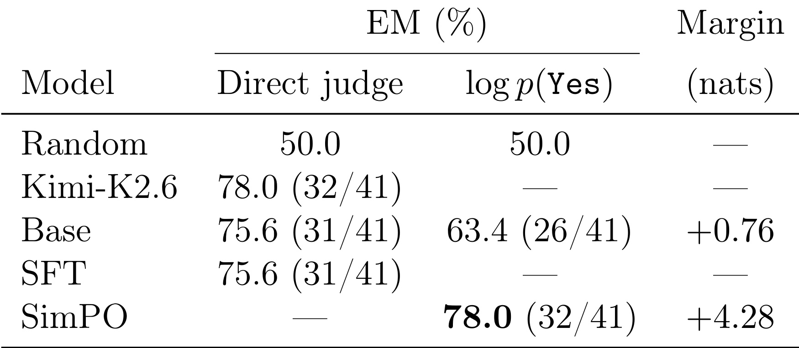
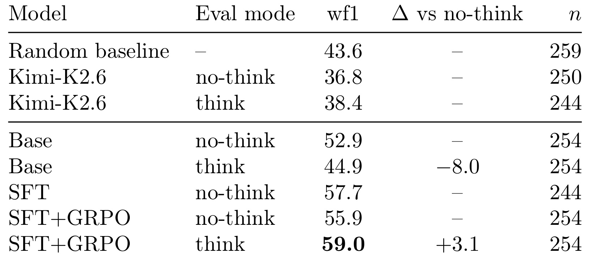
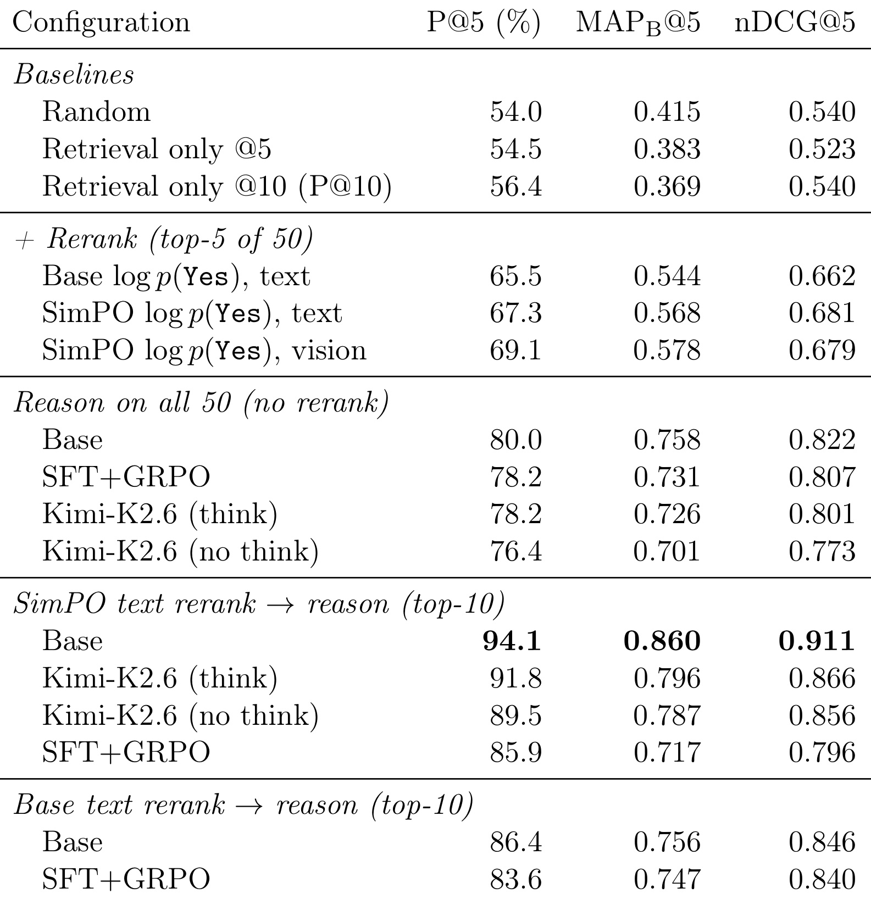
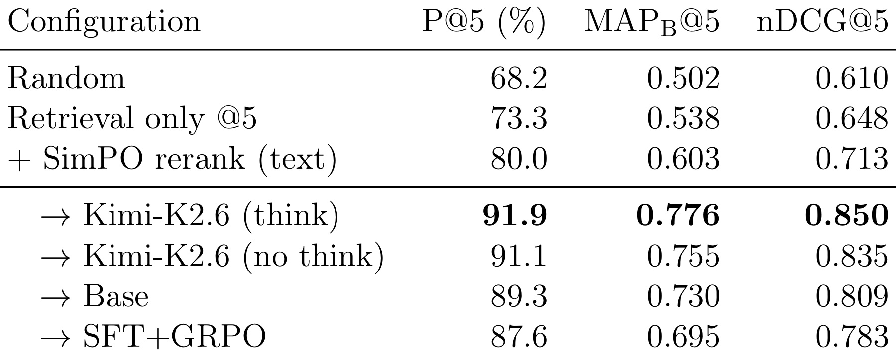
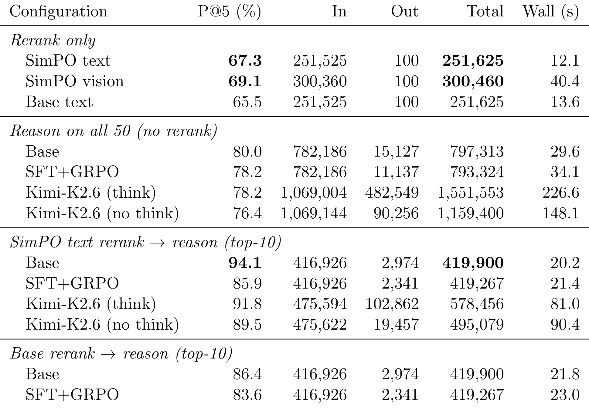

InfluMatch：以 4B 模型成本实现接近前沿模型的 KOL 搜索
论文链接：arXiv:2607.05968
作者团队来自 Amity AI Holdings。论文研究的是泰国市场的 KOL 搜索：品牌方用自然语言描述营销 brief，系统需要从创作者库里找到真正匹配受众、内容风格、表达调性和可信度的达人，并给出可审计的泰语理由。它的卖点不是又训练了一个更大的排序模型，而是把检索、重排、逐项推理拆成一个成本受控的级联链路，让小模型在合适的位置承担合适的工作。
1. 背景和问题
当前 KOL 匹配通常只能在两种不理想方案之间取舍：基于结构化画像的关键词搜索会漏掉语义上合适但字面不命中的创作者；把每个候选都交给前沿大模型逐一判断虽然准确，但速度慢、成本高，难以承载真实营销搜索。
这篇论文的场景很具体：泰国 influencer marketing 里，品牌方并不总是用一个干净的属性表来表达需求。真实 brief 往往是多条件、自由文本、带语气和受众假设的描述，例如需要一个面向年轻用户、表达风格轻松、内容与某类食品相关的女性创作者。供给侧也不是标准化 item 表，而是创作者简介、视频转写、受众画像和互动指标等异构泰语信号。这样的任务如果被简化成“筛标签”，会把最难的语义判断推给人工复核；如果被简化成“全量 LLM judge”，又会把 token、延迟和推理并发推到不可接受的位置。
论文选择把这个问题命名为 KOL search，而不是普通推荐排序，这一点值得注意。它的用户意图来自营销 brief，查询维度由 audience fit、content-product relevance、selling style、communication credibility、content format 等准则组成；候选对象是达人而不是文档或商品；输出也不只是一个排序分数，还要给出每条准则的分数和泰语解释，方便营销人员审计。这使得系统既像检索系统，又像带证据的 rubric grading 系统。
与常见 dense retrieval 论文相比，InfluMatch 更关心端到端的服务形态。论文明确报告 retrieval-only 在完整 50 候选池上的 P@5 只有 54.5%，几乎只比随机 54.0% 好一点。这说明召回向量可以把可能相关的人捞进池子，但不能替代最终排序。相反，直接让强模型对 50 个候选全部 reasoning，会产生大量输出 token，并且因为 50 个候选里弱候选、近似候选、同分候选太多，最终 P@5 反而不如先过滤再推理。论文的核心判断是：小模型不是要在每一步都模仿前沿模型，而是要通过级联结构减少必须被精细判断的候选数量。
我读这篇论文时最关心的不是 94.1% P@5 这个单点数字，而是它把“为什么某类监督信号能上线、另一类不能上线”讲得比较清楚。SimPO 训练的 pairwise reranker 在离线 best-pick 和端到端链路里都有效；但 pointwise SFT+GRPO reason scorer 离线 wf1 最高，端到端却弱于 untuned Base reasoner。这个反转使论文不只是一个系统报告，也是一份关于推荐/搜索标注几何的案例：相对偏好更贴近排序目标，绝对分数在标注边界不清时可能学到错误的慷慨判断。
另外，InfluMatch 把“解释”放在最后一步，而不是一开始就要求模型对所有候选写理由，这也是本文和很多 LLM reranking 方案的差别。解释本身并不免费：它会消耗输出 token，也会放大模型在弱候选上的幻觉空间。只有先把候选压到足够短的集合，逐准则理由才更像产品能力，而不是昂贵的日志。这个顺序让论文的问题定义更接近真实业务：营销人员最终需要能读懂为什么某个 KOL 被推荐，但系统不应该为了生成每个候选的理由而牺牲检索吞吐。
这也让它和普通“达人推荐”有所不同。普通推荐可以把解释留给后处理，KOL search 的用户却往往要把结果带回品牌方、代理商或内部营销团队讨论，因此候选为何符合每一条 brief 准则会直接影响采用率。论文把解释视为排序链路的组成部分，而不是展示层文案，这一点使后续成本分析更有意义。
2. 方法
2.1 Problem Formulation
论文把营销 brief 先展开为准则集合 C，再把所有 KOL 表示为候选集合 K。形式上，任务可以写成：
符号解释：C 是从品牌 brief 中抽取或生成的多条匹配准则，K 是候选 KOL 池，每个 k 都由简介、视频摘要、受众画像等泰语异构证据表示。系统要输出一个排序 π，并且对进入短名单的候选给出每条准则上的 ordinal score 和泰语理由。这个定义把“找谁最适合”拆成两个同时存在的目标：一是排序质量，二是逐准则可解释性。
这个 formulation 的关键是它没有把 KOL 匹配等同为单个 query 与单个 profile 的相似度。每个 brief 会被展开成多条准则，候选也由多个 evidence chunks 构成。于是，第一阶段要尽量不漏召回；第二阶段要在 50 个候选里快速学习相对优先级；第三阶段才做昂贵的 per-criterion 判断。InfluMatch 的方法主线是把排序目标和解释目标分离到不同阶段，再用候选收缩把昂贵解释限制在 top-10。
2.2 Cascade Overview

Figure 1 展示了全文最核心的系统结构。左侧 criteria 同时进入检索库，Retrieval 阶段负责从全量 KOL 数据库里捞出 top-50；中间 Rerank 阶段让 4B 模型逐个看候选 profile 和视频摘要，用一个 Yes token 的概率给候选打分，并把候选压到 top-10；右侧 Reason 阶段才逐候选、逐准则给出 0/1/2 分和泰语解释。图里箭头从 Criteria 同时连向三个阶段，说明同一组准则贯穿召回、重排和解释，而不是每一层使用不同任务定义。这个设计对生产系统很重要，因为它避免了召回层和推理层优化不同目标：召回看“每条准则有没有相似证据”，重排看“整体是否匹配”，推理看“每条准则能否给出理由”。

Table 1 把 Figure 1 的图形结构落实到接口。Retrieval 的输入是 corpus，输出是 50 个 ranked candidates；Rerank 的输入是 50，输出是 10 个 relevance scores；Reason 的输入是 10，输出是 final scores 和 Thai rationale。这个表看似简单，但它定义了成本边界：只有 top-10 会进入最昂贵的逐准则解释阶段。论文后面报告 reason-on-all-50 不但 token 更多，P@5 还更低，正是因为没有遵守这个分工。这里的级联不是“先便宜后昂贵”的泛泛 pipeline，而是把每个阶段的输出对象和候选规模都固定下来，便于部署时做延迟和吞吐预算。
检索阶段的做法是把每个 criterion 当成独立 query vector，在 KOL 的 pooled vector table 中检索。一个 KOL 对某条准则的相似度取该 KOL 所有向量中的 best-matching vector，也就是对 cosine distance 取最小值；然后把多条准则的相似度加总得到 retrieval score。这个设计偏 recall：它允许某个达人某段视频或某个 profile field 命中某条准则，不要求所有证据都在同一字段里出现。检索之后可以加 optional hard tier filter，再取 top-50。
重排阶段刻意采用 pointwise scorer，而不是 listwise sliding-window reranker。模型输入 criteria、profile details 和 video summaries，输出的服务分数是：
符号解释：s 是候选 k 在准则集合 C 下的 relevance score，Yes 是单 token 响应。用单 token 概率有两个好处：它几乎不产生输出 token，且 50 个候选可以并行计算。对 KOL 搜索这种在线查询而言，listwise reranking 可能质量更强，但 prompt 长、窗口滑动多、延迟不可控；InfluMatch 选择的是更能落地的 scoring interface。
Reason 阶段则对 top-10 候选逐准则评分。每个准则得到一个 ordinal score，最终分数是偶权加和：
符号解释：s_i(k) 是候选 k 在第 i 条准则上的分数，m 是准则数量，s(k) 是最终排序分数。这个公式暴露了 reasoner 的优势和风险：优势是可解释、可审计；风险是分数粒度很粗，如果直接对 50 个候选加和，会产生大量 tie 或 near-tie，弱候选也会挤进前排。因此论文最终选择的是 SimPO reranker 先清理 top-10，再让 Base reasoner 做精细判断。
2.3 Reranker Training: Pairwise SimPO
Reranker 的训练信号来自 pairwise best/worst judgment，而不是绝对 relevance label。论文用 LoRA adapter 微调 4B reranker，并采用 SimPO。由于模型服务时只看 Yes token 的 log probability，SimPO 的 length-normalized reward 在这里退化成同一个分数，因此训练目标可以直接写成 preferred candidate 与 dispreferred candidate 的分差：
符号解释：s_w 是 preferred KOL 的 Yes-token 分数，s_l 是 dispreferred KOL 的分数，β 控制差值温度，γ 是目标 margin，σ 是 sigmoid。这个目标与 serving score 完全一致：训练时拉开 Yes-token 分差，推理时也按 Yes-token 分数排序。论文还训练了 SFT-judge 对照：同样使用 pairwise 标签，但输入两个候选，输出 A 或 B。这个对照用来隔离“标签形态”和“目标函数”两个因素；后面 Table 6 表明真正转移到服务链路的是 SimPO 的 pointwise score，而不是简单的 direct judge SFT。
2.4 Reason Scorer Training: Pointwise SFT+GRPO
Reason scorer 的 fine-tuning 是论文里最有意思、也最警惕的一部分。作者用 pointwise per-criterion ordinal labels 训练 reason scorer：SFT 先让模型适应逐准则评分格式，GRPO 再用 gated reward 优化。奖励规则是：只有 completion 同时给出合法 ordinal score 和非空 rationale 时才有非零奖励；如果 score 与人工标签完全一致给 1.0，差一档给 0.2，翻转给 0。这个 reward 可以概括为：
符号解释：r 是 GRPO 使用的奖励，\hat{y} 是模型预测分数，y 是人工分数，g 表示 exact、off-by-one、flipped 三档支付函数。注意 rationale 没有被直接监督，只是通过 gate 要求必须存在。也就是说，训练真正优化的是“像人工 pointwise label 一样打分”，而不是“生成更可验证的解释”。
论文最后没有部署 fine-tuned reasoner，而是部署 untuned Base reasoner，这不是因为 fine-tuning 没有离线效果。恰恰相反，SFT+GRPO 在 Table 7 上离线 wf1 最强。问题在于 pointwise absolute label 的任务定义与端到端 KOL relevance 不一致：人工对单条准则给 0/1/2 分时没有统一边界，且每个 brief 下的候选连续标注会引入 batch 内相关性；端到端评估却看 holistic pass/fail。当绝对分数本身带有慷慨且弱证据的偏差时，模型越好地拟合它，越可能偏离真正的排序目标。
2.5 Data Creation and Human Annotation

Table 3 概括了训练数据的生成链路。作者先从 campaign 和 persona 推断 problem，再用 problem 与 campaign 做 subject grounding 得到 evidence，随后用 problem、evidence、persona 和 constraints 生成 brief，最后把 brief 合成为 5 条 criteria。这个链路说明论文并不是随机生成短 query，而是试图模拟真实 Thai campaign brief 的结构：品牌、产品、目标、受众、语气都会参与生成；criteria 也固定对齐到 audience fit、content-product relevance、selling and persuasion style、communication credibility、content format and execution 五个维度。这样得到的准则既用于第一阶段检索，也用于后续人工标注和 reason scorer 评分。

Figure 2 把三种监督信号的差异讲得很直观。Pointwise Scoring 让 annotator 对一个 KOL 在每条 criteria 上给 Yes/Unsure/No，也就是 2/1/0；Binary Match 让 annotator 给一个整体 pass/fail，用于端到端 relevance；Best/Worst Selection 让 annotator 在三个 KOL 中选最好和最差，用于 pairwise reranker。这个图的价值在于，它解释了为什么同一批人类标注会导向两种不同训练结论：SimPO 用的是相对偏好，直接服务排序；SFT+GRPO 用的是逐准则绝对分，服务解释格式，但未必服务最终 top-5。换句话说，Figure 2 不只是数据收集界面截图，而是全文 supervision geometry 的索引：T10 更像排序训练信号，T2 更像解释训练信号，E2E 才是最后验收标准。
3. 实验结果
3.1 Label Quality Audit

Table 2 是理解全文实验反转的第一张关键表。Kimi audit 对 873 个 human (KOL, criterion) pair 检查人工分数是否能被 profile 中的原文证据支撑，并且 quote 必须能在 profile 中精确找到。结果显示 score 0 的证据支持率为 78.9%，score 1 为 54.8%，score 2 只有 15.9%。由于 score 2 又是最大类，约占 48%，这意味着大量“匹配”标签实际上缺少可验证证据。这个现象不是小噪声，而是会系统性影响 pointwise reason scorer：如果模型学会复制这种宽松的 yes，它离线会更像标注员，但上线会把弱证据候选排得过高。
这也是论文在讨论里强调“plateau is label-imposed, not capacity-imposed”的原因。作者进一步指出，在 evidence audit 标为 clear-cut 的约 38% 测试项上，SFT checkpoint 从 57.7 wf1 升到 73.4，SFT+GRPO 达到 80.6。这说明 4B 模型并非不能学逐准则判断，而是完整标签集里混入了太多无证据或边界不一致的正例。对推荐系统来说，这个结果很有启发：当标注任务要求人工给绝对等级，但没有足够明确的 rubric，模型可能学到“人类主观宽容”，而不是学到“可泛化相关性”。
3.2 Reranker Offline Evidence

Table 6 比较了 reranker 在 T10 pairwise test split 上的 best-pick EM。Kimi-K2.6 direct judge 是 78.0；Base direct judge 是 75.6；Base 的间接 log p(Yes) path 只有 63.4，margin 为 +0.76。SimPO 训练后，间接 path 达到 78.0，margin 扩大到 +4.28，约为 Base margin 的 6 倍。这个结果说明 SimPO 并不是只让模型更会输出自然语言判断，而是精确改善了服务时使用的那个 scalar score。SFT-judge 使用同样 pairwise 数据但走 direct A-vs-B 输出，只有 75.6，说明收益主要来自 preference objective 与 serving path 对齐。
如果从工程角度看，Table 6 支撑了“pointwise 小模型重排可上线”的判断。它不需要 listwise prompt，不需要让模型生成长解释，也不需要把 50 个候选拼成一个巨大上下文。每个候选只要得到一个 Yes-token log probability，系统就能并行打分并取 top-10。更重要的是，SimPO 学的是相对差异：preferred KOL 比 dispreferred KOL 更应该靠前。这和搜索排序的目标天然一致，后面端到端结果也证明这类监督能传递到 P@5。
3.3 Reason Scorer Offline Evidence

Table 7 先给出了一个看似会误导部署选择的离线结论：SFT+GRPO think mode 以 59.0 wf1 排第一，SFT no-think 为 57.7，Base no-think 为 52.9，Kimi-K2.6 甚至低于 stratified random baseline。论文解释说，frontier baseline 更 evidence-faithful，因此会拒绝许多人工标成 yes 但证据不充分的中间或正向标签，导致对人工标签的 wf1 不高。Base 以及 fine-tuned students 则更接近人工分布，尤其 SFT+GRPO 学会了输出合法 rationale 并贴近 ordinal labels。
这张表不能单独解读成“应部署 SFT+GRPO reasoner”。它只能说明 pointwise fine-tuning 提高了对 held-out human labels 的拟合程度。论文真正的贡献是把这个离线榜单放到端到端 ranking 后重新审视：如果离线标签的几何不对，离线第一名可能是部署里最差的 fine-tuned reasoner。这里的 caution 很明确：推荐/搜索系统里的 judge 或 scorer，不能只用自身训练标签上的 F1 选型，必须看它在完整候选链路里是否改善最终 top-k。
3.4 End-to-End Ranking

Table 8 是全文主结果。Set 1 有 11 个 query，每个 query 的 top-50 候选都被标注，因此能比较完整链路。Retrieval only @5 的 P@5 是 54.5，几乎等于 random 的 54.0，说明召回排序本身很弱；Base log p(Yes) text rerank 提到 65.5，SimPO text rerank 到 67.3，SimPO vision 到 69.1。真正的跃迁来自 reason stage：reason on all 50 的 Base 为 80.0，而 SimPO text rerank -> Base reason top-10 达到 94.1，MAPB@5 为 0.860，nDCG@5 为 0.911。
这张表有三个关键结论。第一，rerank-then-reason 比 reason-on-all-50 更强，94.1 对 80.0；也就是说，先过滤并不是为了省钱牺牲质量，而是同时提升质量。第二，upstream reranker 会影响 final reasoner：SimPO rerank 接 Base reason 比 Base rerank 接 Base reason 高 7.7 P@5。第三，Base reason 在 Set 1 上超过 Kimi-K2.6 think：94.1 对 91.8，同时 SFT+GRPO reason 只有 85.9。这就是论文题目里 frontier-quality 与 4B cost 的来源：不是小模型单点超过前沿模型，而是小模型被放在更合适的级联结构里。

Table 9 用 31 个 query、top-10 labeled 的 Set 2 复现趋势。Retrieval only @5 是 73.3，SimPO rerank text 到 80.0，接 reason 后 Kimi-K2.6 think 为 91.9，Base 为 89.3，SFT+GRPO 为 87.6。这里 Kimi-K2.6 略高于 Base，与 Set 1 的排序相反，但整体结论一致：rerank 提升第一段质量，reason 再带来 7.6 到 11.9 个点的 P@5 增益；SFT+GRPO 仍然是 reason rows 中最弱的一档。Set 2 的意义是提醒读者：Base reason 并非在所有切分上都严格赢过 frontier model，但低成本级联稳定接近 frontier，且 pointwise fine-tuned reasoner 的端到端问题不是 Set 1 的偶然。
3.5 Cost vs Accuracy

Table 10 把结果放回服务成本。SimPO text rerank only 消耗约 251.6k total tokens，P@5 为 67.3；reason on all 50 的 Base 消耗 797.3k total tokens，P@5 只有 80.0；SimPO text rerank -> Base reason top-10 消耗 419.9k total tokens，P@5 为 94.1，wall time 约 20.2 秒。Kimi-K2.6 think 在同一 top-10 reason 链路里 total tokens 为 578.5k，output tokens 高达 102.9k，而 Base reason 的 output tokens 约 3.0k。论文据此说 Base reason 相比 Kimi-K2.6 输出 token 少约 35 倍。
成本表也解释了为什么 vision rerank 没有成为默认方案。SimPO vision rerank 把 P@5 从 67.3 提到 69.1，但 input tokens 从 251.5k 增到 300.4k，wall time 从 12.1 秒涨到 40.4 秒，而且还不包含约 39 秒/query 的一次性图片抓取成本。对一个 KOL search 产品而言，这样的收益很难覆盖延迟和图像处理复杂度。论文最终的 Pareto knee 是 SimPO text rerank -> Base reason：它不是最便宜点，但在 420k token 左右给出最高 Set 1 P@5，是质量、解释和成本之间最均衡的操作点。
更深一层看，Table 10 说明“推理更多候选”并不是单调有益。Reason on all 50 比 top-10 pipeline 多约 1.9 倍 tokens，却低 14 个 P@5；Kimi-K2.6 all-50 比 top-10 pipeline 多约 2.7 倍 tokens，也低 13.6 个 P@5。原因可能是五条 criteria 各给 0/1/2 的偶权加和在大候选池里分辨率不足，弱候选会制造 tie 和 near-tie；而 pairwise reranker 先过滤掉明显不匹配的人，reasoner 在短名单上才能发挥精细判断优势。这个结果对推荐系统常见“召回越多、精排越强越好”的直觉是一次修正：当 final judge 是 coarse rubric scorer 时，候选池太大反而可能损害 top-k。
4. 总结
InfluMatch 的主要价值在于，它把 KOL 搜索这个商业任务拆成了一个可以部署的小模型级联：dense retrieval 负责 top-50 recall，SimPO 4B reranker 负责 top-10 preference filtering，Base 4B reasoner 负责逐准则解释和最终排序。论文最强结果是 Set 1 上 94.1% P@5，并且用约 3.0k output tokens/query 接近或超过 Kimi-K2.6 的端到端质量。这个结论不应理解为 4B 模型普遍强于前沿模型，而应理解为：在候选数量、评分接口和监督信号设计合适时，小模型系统可以以更低成本达到产品可用质量。
我认为这篇论文最值得带走的不是具体模型名，而是监督信号的选择。Pairwise SimPO 能转移，是因为它直接优化候选之间的相对顺序，并且服务时也按同一 Yes-token score 排序；pointwise SFT+GRPO 不能转移，是因为它拟合的是边界不清的逐准则人工分数。论文用 evidence audit 证明大量 score-2 标签没有可验证证据，从而解释了为什么离线 wf1 第一的 reasoner 会在端到端排序里变弱。这对任何 LLM judge、LLM reranker 或推荐标注项目都很现实：如果 label geometry 与线上目标不同，模型越会拟合标签，越可能学错线上策略。
局限也比较明显。第一，Set 1 只有 11 个 query，Set 2 也只有 31 个 query，pairwise test split 只有 41 个 triplets，几个点的差距不能当成统计显著结论。第二，训练和评估都面向 Thai KOL market，迁移到其他语言、其他 creator ecosystem 或商品/内容推荐，需要重新验证。第三，brief 是 synthetic-but-realistic，虽然有 web grounding 和 hard constraints，但仍可能偏离真实品牌 brief。第四，evidence audit 由 frontier model 执行，quote exact-match 是客观检查，但证据选择与 grounding judgment 仍可能继承 auditor 偏差。
后续如果要复现或扩展，我会优先看三件事。第一，把 pairwise preference collection 做成常态化标注，因为它比绝对 0/1/2 更贴近排序目标。第二，对 reasoner 不只做 pointwise label fitting，而是尝试直接用 end-to-end ranking reward 或 pairwise reason preference 微调。第三，把 top-10 reason 的 tie-breaking 和 score aggregation 做得更细，例如准则加权、置信度校准或用 pairwise reason comparison 处理同分候选。InfluMatch 给出的经验很清楚：KOL 搜索不只是“让大模型判断谁合适”，而是要把召回、偏好过滤、逐准则解释和成本预算放在同一个系统目标下设计。
对工程团队来说，本文还提供了一个很实用的验收顺序：先看召回池里是否仍有足够多的真正相关达人，再看重排器能否稳定把好候选推入短名单，最后才评估解释器写得是否漂亮。如果第一步召回漏人，reasoner 再强也救不回来；如果第二步重排不干净，解释器会把大量预算花在边缘候选上；如果第三步解释只追求贴近人工分数而不追求证据一致，系统就会在离线指标上好看、在真实营销决策里失真。InfluMatch 的实验把这三层风险拆开呈现，因此比单纯报告一个端到端分数更有参考价值。
因此，这篇工作适合被当作“标注、级联、解释、成本”四件事一起设计的样例，而不是单独复用某个模型。真正可迁移的经验是：先用相对偏好保护排序，再用短名单解释服务决策，并始终用端到端相关性约束离线训练信号。